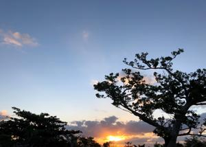

うるがいの話 ある日
最新: ステップ１うるがいとは 前提知識です
カニの画像をクリックすると『うるがいの話』サイトを表示します|
|
【うるがいの話】 うるがい(ｳﾙｶﾞｲ urugai)とは、『もずくがに』の名前でとても大きくなります。 |
|---|---|
|
|
【Got cat カミマヤーの話】 たながー（ﾀﾅｶﾞｰtanagaa）とは手長えびのことで、何種類かあり大きいのは車 エビぐらいになります。 |

|
【ぶながぁの話】 ぶながー(bunagaa)とは、赤い髪の毛、赤い身体、そして身長は１ｍ２０ｃｍ ぐらい、川の蟹を食べているの目撃された。場所は沖縄県国頭郡大宜味村のと ある村僕の隣近所に住んでいる爺さんから、聞いた話です。 |
|
|
【ギーマの話】 ギーマ(giima)とは、山原の里山に咲くスズランに似た、 花を付けます。実は食べられます、 気が付くと口の周りが紫になっています。 |
2021年10月27日 (水）ステップ１
21:18


『うるがいの話』のホームページを少し、かっこよく変更した。ＨＴＭＬの専
門書を自習した後の実践である。ところがスマホで検証すると過去１０回目の
ページが、一文字ずれている。およおよ、時間がかかりそうなのでステップ１
としてリリースする。修正した箇所は、関連サイトを頭に、そして過去ログを
横並び（マウスを切り出し日に置くと、サイトの記録範囲がポップされる、ス
マホでも操作できるが操作が難しい、jQueryを適用した）。
『それはアナタが言ったことでしょう』とわなわなと唇を、震わせて後輩のマ
グロ君が、仕事の件で私に意見をいった。え、そんな記憶はないが、でも時々
前に言ったけど忘れているとよく言われるしな・・とその時は争いは避け穏便
に済ませることにした。その場には、シマア君もいて気まずそうな顔をしてい
た。私が退職する時点では、シマア君、東京の仕事をする予定と聞いていたが
コロナでいろいろあったのか、２月で退職し今度１１月４日から派遣社員とし
て働くらしい。コロナの新規感染者数はかなり減ってきている、次の波が来な
い前に糸満のオバサン（痴呆が始まっているとのこと）に会いに行かねばと思
う今日この頃だ。子供よりひと月早い皇室の姉と妹のハグをニュースで見たが
涙が出てしまった。